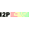
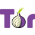

PRISM
⚡
Break
Все проекты
По платформам
По протоколам
О проекте
Пожертвовать Bitcoin
По платформам
/
Windows
/
Анонимные сети
Свободные рекомендации
Freenet
Устойчивая к цензуре децентрализованная сеть.
GNUnet
Полностью свободная P2P сеть.

I2P
Проект невидимый интернет.
Syndie
Программное обеспечение для анонимных распределенных форумов.

Tor
Свободное программное обеспечение для реализации второго поколения так называемой «луковой маршрутизации». Это система прокси-серверов, позв…
Проприетарный вариант
Windows
Анонимные сети
Bookmark Sync
Шифрование диска
DNS
Аккаунты электронной почты
Альтернативы электронной почте
Клиенты электронной почты
Шифрование электронной почты
Enterprise Suite
Хранение и синхронизация файлов
Финансы
Мгновенный обмен сообщениями
IRC
Серверы электронной почты
Публикация медиаинформации
Ячеистые сети
Операционные системы
Операционные системы (Live)
Password Managers
Продуктивность
Серверы SIP
Социальные сети
Передача видео и голоса
VPN аккаунты
VPN клиенты
Дополнения для браузера
Браузеры
Веб-хостинг
Поисковые системы
Картографические сервисы